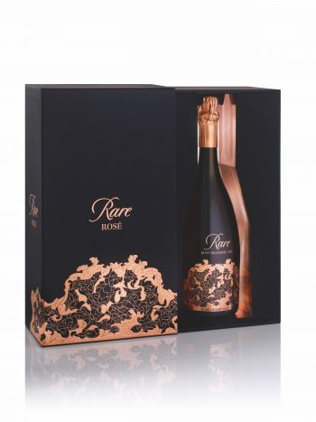

sultys
About me

Past Articles
- Įvairios sultys
Kiekvieną rytą išgerkite 200 ml (galima didinti iki 300-400 ml) sulčių ant tuščio skrandžio. Tai turi būti šviežios sultys, be jokių pridėtinių ingredientų. Salierų sultys yra nekaloringas gėrimas – 2 saliero kotai turi apie 16 kcal. Tam, kad juos suvirškinti, organizmas sunaudoja 14 kcal, vadinasi, Jums lieka vos 2 kcal. - Vaisiu Sultys | Lietuviškos sultys ne iš koncentrato
Su meile – rudenio gėrybėms! Sultys spaudžiamos ir pasterizuojamos iš: obuolių, kriaušių, moliūgų, cukinijų, morkų, apelsinų; Reikalingi švarūs ir nepapuvę vaisiai, nes nuo to priklauso Jūsų sulčių kokybė ir ilgaamžiškumas. - Tomo Sultys – sulčių spaudimas
Sultys Pristatymo miestas: 3.00 € / vnt. Aviečių sultys, 300ml Mindaugo Slapkausko ūkis. 3 ... - Vis dar negeriate šių sulčių? Biomedicinos mokslų daktarė ...
Natūralios uogų ir vaisių sultys, kiti sveiki produktai Darbo laikas: I - V 9:00 - 19:00 | VI - VII Telefonas: 862855510, 865034137 El. paštas: info@uogusultys.lt Adresas: Pievų g. 9, Giedrių kaimas, Jurbarko rajonas - Sulčių spaudykla, sulčių spaudimas, spaudžia sultis
Obuolių sultys. Spaudžiame ir pasterizuojame obuolių sultis Utenoje, Užpalių g. 83B, kiekvieną dieną 08:00 - 20:00. Tel. +37068142902. - Obuolių sultys | Kontaktai | Utenos sultys | Obuolių ...
Sultys, Sulčių spaudyklos, Prekyba pakuotėmis, Prekyba sulčių spaudimo įranga. Lietuvos sulčių spaudyklų katalogas, rask sulčių spaudyklą savo mieste! - Sultys | Produktų katalogas
Ekologiškos biodinaminės sultys FUR shot su imbieru ir ciberžole, 60ml 1,99 ... - Sultys | Uogusultys.lt
Ažuožerių sultys, ŽŪK | Šeimyniškių k., Anykščių r. Lietuva | Tel. - Sultys - BARBORA
Sultys. Sultys pakaitintos iki 80 laipsnių, todėl vitaminai išlikę sultyse. Tetrapakus galima laikyti neatidarytus 2 metus, tačiau vitaminai išlieka iki 9 mėn, o pradarius tetrapaką, sultis reikėtų išgerti per 3 mėn. - SULTYS | Gaivieji gėrimai | Gėrimai | e-eugesta.lt prekės ...
Obuolių,morkų sultys VAISIŲ SULTYS su minkštimu, 750 ml. €1,89 €0,10 × Tara €2,52/l. Obuolių,morkų sultys VAISIŲ SULTYS su minkštimu, 750 ml. KARTU REKOMENDUOJAME. Apelsinų ir pasiflorų sultys HOHES C PLUS su vitaminu D, 1 l. €2,29 €0,10 × Tara ...
Menu
- Įvairios sultys
- Vaisiu Sultys | Lietuviškos sultys ne iš koncentrato
- Tomo Sultys – sulčių spaudimas
- Vis dar negeriate šių sulčių? Biomedicinos mokslų daktarė ...
- Sulčių spaudykla, sulčių spaudimas, spaudžia sultis
- Obuolių sultys | Kontaktai | Utenos sultys | Obuolių ...
- Sultys | Produktų katalogas
- Sultys | Uogusultys.lt
- Sultys - BARBORA
- SULTYS | Gaivieji gėrimai | Gėrimai | e-eugesta.lt prekės ...
Pirmasis podkastas Lietuvoje apie kūną, seksą ir santykius

Nemokamas pristatymas visoje Lietuvoje. Nori pasikonsultuoti? Rašyk: [email protected]
Tekstai SULTYS Moterims Vibratoriai Universalūs Klitoriniai G-taško Rabbit Kompaktiški Valdomi nuotoliniu būdu Prabangūs Poroms Lubrikantai Libido produktai Mėnesinės Ekologiškos menesines Menstruacinės taurelės Priežiūros priemonės Kėgelio pratimams Kėgelio treniruokliai Kėgelio kamuoliukai Rinkiniai Intymiai higienai Sekso žaislų valikliai Dildo Vyrams Masturbatoriai Penio žiedai Erekcijai Prostatos masažuokliai Prezervatyvai Lubrikantai Poroms Vibratoriai poroms BDSM Lubrikantai Libido produktai Prezervatyvai Rinkiniai Žaidimo kortos Lubrikantai Vandens pagrindo lubrikantai Silikono pagrindo lubrikantai Natūralūs lubrikantai Rinkiniai BDSM Kita Analiniam Analiniai kaiščiai Lubrikantai Žaidimo kortos Marškinėliai Priežiūros priemonės Intymiai higienai Sekso žaislų valikliai Dovanų kuponai 0 Produktų nėra. 0 Produktų nėra. Moterims Vibratoriai G-taško vibratoriai Klitoriniai vibratoriai Kompaktiški vibratoriai Masažuokliai Prabangūs vibratoriai Rabbit vibratoriai Universalūs vibratoriai Vibratoriai valdomi nuotoliniu būdu Poroms Lubrikantai Libido produktai Kėgelio pratimams Kegel treniruokliai Kėgelio kamuoliukai Rinkiniai Priežiūros priemonės Intymiai higienai Sekso žaislų valikliai Dildo Mėnesinės Menstruacinės taurelės Daugkartiniai įklotai/kelnaitės Intymiai higienai Vyrams Masturbatoriai Penio žiedai Erekcijai Lubrikantai Prezervatyvai Prostatos masažuokliai Poroms Vibratoriai poroms BDSM Lubrikantai Libido produktai Prezervatyvai Rinkiniai Žaidimo kortos Analiniam seksui Analiniai kaiščiai Analiniai lubrikantai Rinkiniai Dovanų kuponas BDSM KITA Žaidimo kortos Marškinėliai SULTYS TekstaiSULTYS – pirmasis podcastas Lietuvoje apie seksą, kūną ir santykius
Kodėl šios temos mūsų visuomenėje yra tabu? Kaip jas prisijaukinti? Kaip kurti sveikus santykius? Kas yra kultūrinis seksizmas? Kaip atsipalaiduoti sekso metu? Kas yra vaginizmas? Kaip išgyti po seksualinės prievartos?
Jeigu ir tau šie klausimai kyla, dairykis atsakymų artėjančiuose Sulčių epizoduose.
Turi ką pasiūlyti? Susisiek!
SULTYS: Toksiški santykiai ir narcizai
SULTYS: Apie grožio standartus, pavydą ir kaip jaustis seksualiai
SULTYS: Vaikai, pinigai ir buitis lygiavertiškuose santykiuose
Ko nedrįsti paklausti savo mamos?
Tantra: kas tai?
Kaip paįvairinti seksualinį gyvenimą?
Kaip išlaikyti aistrą ilgalaikiuose santykiuose?
Meilės pamokos bręstančiam kūnui
Agnė Grigaliūnienė ir jos meilės pamokos sau
Apie tikras ir „neteisingas“ feministes
Beata ir Julia: apie gražias ir kenksmingas moterų draugystes
Negaliu patirti orgazmo. Ką daryti?
1 2 3 4 5 6 7 8 Apie Mus Kontaktai Parduotuvė Privatumo Politika Biblioteka Naujienlaiškis Prisijungti Prekių grąžinimas ir garantijaNebegėda pateikiama informacija ir prekės yra skirtos asmenims vyresniems nei 18 metų.
Jei esate vyresni nei 18 metų, spauskite TAIP tuo pačiu patvirtindami, kad informacija bus skirta tik jūsų asmeniniam naudojimui ir bus saugoma nuo nepilnamečių.
TAIP NESvetainėje yra naudojami slapukai ("cookies"). Plačiau apie slapukų naudojimą sužinokite čia .
Tęsti paiešką PIRKTI >Posted by Jack  Read more
Read more  Comments (15)
Comments (15)  2020.10.29 08:18
2020.10.29 08:18